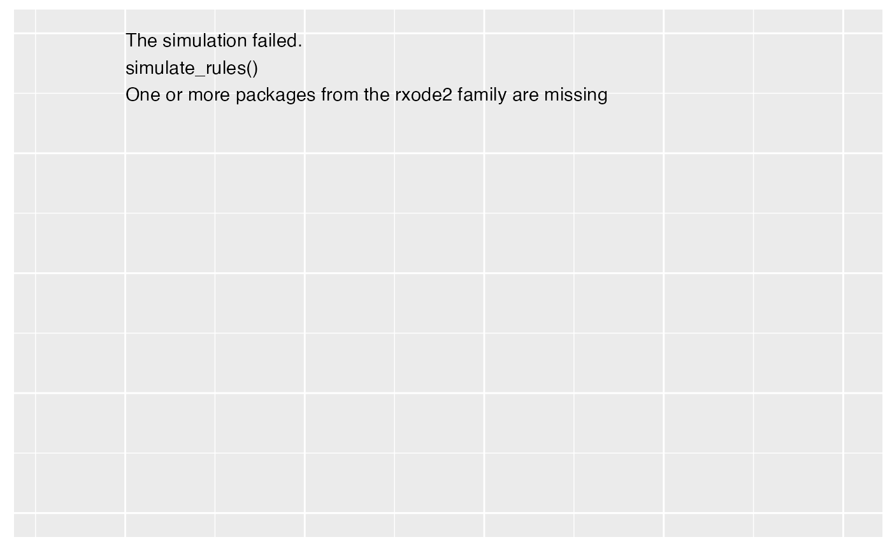

This will provide information like parameter names, covriates, etc from an rxode2 object.
Value
List with the following elements.
isgood: Boolean variable indicating if the model is good.
msgs: Any messages from parsing the model.
elements: List with names of simulation elements:
covariates: Names of the covariates in the system.
parameters: Names of the parameters (subject level) in the system.
iiv: Names of the iiv parameters in the system.
states: Names of the states/compartments in the system.
txt_info: Summary information in text format.
list_info: Summary information in list format used with onbrand reporting.
ht_info: Summary information in HTML formot.
Examples
library(formods)
library(ggplot2)
# For more information see the Clinical Trial Simulation vignette:
# https://ruminate.ubiquity.tools/articles/clinical_trial_simulation.html
# None of this will work if rxode2 isn't installed:
if(is_installed("rxode2")){
library(rxode2)
set.seed(8675309)
rxSetSeed(8675309)
my_model = function ()
{
description <- "One compartment PK model with linear clearance using differential equations"
ini({
lka <- 0.45
label("Absorption rate (Ka)")
lcl <- 1
label("Clearance (CL)")
lvc <- 3.45
label("Central volume of distribution (V)")
propSd <- c(0, 0.5)
label("Proportional residual error (fraction)")
etalcl ~ 0.1
})
model({
ka <- exp(lka)
cl <- exp(lcl + etalcl)
vc <- exp(lvc)
kel <- cl/vc
d/dt(depot) <- -ka * depot
d/dt(central) <- ka * depot - kel * central
Cc <- central/vc
Cc ~ prop(propSd)
})
}
# This creates an rxode2 object
object = rxode(my_model)
# If you want details about the parameters, states, etc
# in the model you can use this:
rxdetails = fetch_rxinfo(object)
rxdetails$elements
# Next we will create subjects. To do that we need to
# specify information about covariates:
nsub = 2
covs = list(
WT = list(type = "continuous",
sampling = "log-normal",
values = c(70, .15))
)
subs = mk_subjects(object = object,
nsub = nsub,
covs = covs)
head(subs$subjects)
rules = list(
dose = list(
condition = "TRUE",
action = list(
type = "dose",
state = "central",
values = "c(1)",
times = "c(0)",
durations = "c(0)")
)
)
# We evaulate the rules for dosing at time 0
eval_times = 0
# Stop 2 months after the last dose
output_times = seq(0, 56, 1)
# This runs the rule-based simulations
simres =
simulate_rules(
object = object,
subjects = subs[["subjects"]],
eval_times = eval_times,
output_times = output_times,
rules = rules)
# First subject data:
sub_1 = simres$simall[simres$simall$id == 1, ]
# First subjects events
evall = as.data.frame(simres$evall)
ev_sub_1 = evall[evall$id ==1, ]
# All of the simulation data
simall = simres$simall
simall$id = as.factor(simall$id)
# Timecourse
psim =
plot_sr_tc(
sro = simres,
dvcols = "Cc")
psim$fig
# Events
pev =
plot_sr_ev(
sro = simres,
ylog = FALSE)
pev$fig
}
#> rxode2 3.0.0 using 1 threads (see ?getRxThreads)
#> no cache: create with `rxCreateCache()`
#> ========================================
#> rxode2 has not detected OpenMP support and will run in single-threaded mode
#> This is a Mac. Please read https://mac.r-project.org/openmp/
#> ========================================
#>
#>
#> ℹ parameter labels from comments are typically ignored in non-interactive mode
#> ℹ Need to run with the source intact to parse comments
